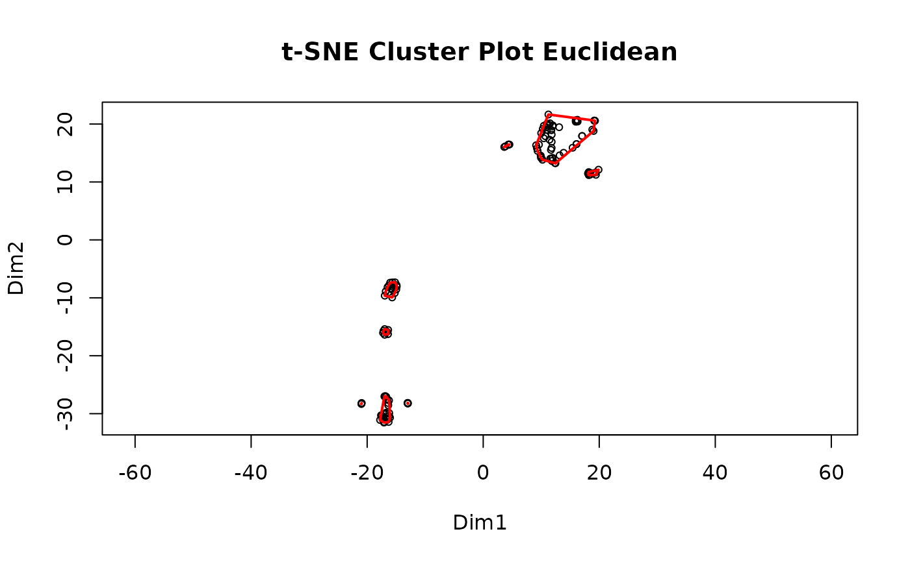

Build Clusters Based on PTM Data Under Like Conditions
MakeClusterList.RdThis function takes the post-translational modification table and runs it through three calculations of distance: Euclidean Distance, Spearman Dissimilarity (1 - |Spearman Correlation|), and the average of the two of these. These calculations find the 'distance' between ptms based upon under what conditions they occur. These matricies are then run through t-SNE in order to put them into a 3-dimensional space. Additionally, the intersection of these 3 clusters is also created. A correlation table is also produced based on the Spearman Correlation table.
Usage
MakeClusterList(
ptmtable,
keeplength = 2,
toolong = 3.5,
tsne_perplexity = 15,
tsne_max_iter = 5000
)Arguments
- ptmtable
A dataset for post-translational modifications. Formatted with row's names containing PTM names. The column names should be drugs. Values are numeric values that represent how much the PTM has reacted to the drug.
- keeplength
Only keep clusters of ptms whose size is larger than this parameter. (I.e keeplength = 2 then keep ("AARS", "ARMS", "AGRS") but not ("AARS", "ARMS")); default is 2
- toolong
A numeric threshold for cluster separation, defaults to 3.5.
- tsne_perplexity
The perplexity parameter for Rtsne. Please read Rtsne documentation for more information.
- tsne_max_iter
Number of iterations for Rtsne. Please read Rtsne documentation for more information.
Value
A list with these data structures at the given index:
Clusters in all 3 distance metrices as a list.
A matrix containing values of 0s and 1s depending on if the PTMs are cocluster with other PTMs, rows and columns are unamed.
A data frame showing the correlation between ptms (as the rows and the columns) with NAs placed along the diagonal.
Details
Please note: t-SNE involves an element of randomness; in order to get the same results, set.seed(#) must be called.
Examples
Example_Output <- MakeClusterList(ex_tiny_ptm_table) #Run function
#> Starting correlation calculations and t-SNE.
#> This may take a few minutes or hours for large data sets.
#> Spearman correlation calculation complete after 0.26 secs total.
#> Spearman t-SNE calculation complete after 1.87 secs total.
#> Euclidean distance calculation complete after 1.87 secs total.
#> Euclidean t-SNE calculation complete after 3.53 secs total.
#> Combined distance calculation complete after 3.53 secs total.
#> SED t-SNE calculation complete after 5.09 secs total.

#> Clustering for Euclidean complete after 5.98 secs total.
 #> Clustering for Spearman complete after 5.99 secs total.
#> Clustering for Spearman complete after 5.99 secs total.
 #> Clustering for SED complete after 5.99 secs total.
#> Consensus clustering complete after 6.03 secs total.
#> MakeClusterList complete after 6.04 secs total.
Example_Output[[1]][1:3] #Display data
#> $ConsensusCluster1
#> [1] "RNPS1 p Y205" "EML4 p Y453"
#> [3] "DDX5 p Y442" "DCBLD2 p Y732"
#> [5] "SYK p Y203" "PKP4 p Y494"
#> [7] "IRS1 p Y46" "S100A16 p Y20"
#> [9] "EIF4A1 p Y70; EIF4A2 p Y71" "AHCY p Y193"
#> [11] "NECTIN4 p Y502" "PIK3C2B p Y1401"
#> [13] "CBL p Y674" "SEC16A p Y1031"
#> [15] "CLTC p Y634" "DDX1 p Y628"
#> [17] "CGN p Y313" "GAREM1 p Y701"
#> [19] "PKP4 p Y275" "ALK p Y1507"
#> [21] "PDLIM5 p Y251" "ARAP1 p Y504"
#> [23] "MUC1 p Y1229"
#>
#> $ConsensusCluster2
#> [1] "PTPN6 p Y536" "RBM12B p Y326"
#> [3] "CDK1 p Y19; CDK2 p Y19; CDK3 p Y19" "KIAA1217 p Y393"
#> [5] "SRCIN1 p Y264" "EPHA2 p Y575"
#> [7] "PTK2B p Y580" "PIK3R1 p Y467"
#> [9] "ADGRL2 p Y1372" "ENAH p Y529"
#> [11] "FAM20B p Y138" "MAOA p T435"
#> [13] "C11orf52 p Y103" "TC2N p Y154"
#> [15] "SPATS2L p Y15" "EPS8 p Y774"
#> [17] "TJP2 p Y261" "ARHGEF5 p Y1370"
#> [19] "ATXN2L p Y349" "ITSN2 p Y968"
#> [21] "BCAR3 p Y117" "HSP90AB4P p Y32"
#> [23] "LYN p Y397; HCK p Y411" "PTK2 p Y925"
#> [25] "MTMR10 p Y708" "INPPL1 p Y886"
#> [27] "CTNND1 p Y248" "EPB41L2 p Y623"
#> [29] "TNS1 p Y1254" "MAN2A1 p Y33"
#> [31] "AHNAK p Y715" "ATP8B1 p Y1217"
#> [33] "SYTL1 p Y304" "CDK5 p Y15"
#> [35] "NEDD9 p Y92" "ADAM10 p Y741"
#> [37] "G6PD p Y202"
#>
#> $ConsensusCluster3
#> [1] "EIF2S1 p Y147" "ACTG1 p T297; ACTB p T297"
#> [3] "PDLIM5 p T248" "LSR p S365"
#> [5] "DCP1A p Y64" "MAPK13 p T185"
#> [7] "ALK p S1509" "GAREM1 p S700"
#>
#Do we want to have one for adj.consensus? Doesn't seem like it'd be very helpful to view.
utils::head(Example_Output[[3]][, c(1,2,3,4,5)]) #Display data
#> RNPS1 p Y205 PTPN6 p Y536 EIF2S1 p Y147
#> RNPS1 p Y205 NA 1 NA
#> PTPN6 p Y536 1 NA NA
#> EIF2S1 p Y147 NA NA NA
#> ACTG1 p T297; ACTB p T297 NA NA NA
#> RACK1 p T229 NA NA NA
#> EML4 p Y453 -1 -1 NA
#> ACTG1 p T297; ACTB p T297 RACK1 p T229
#> RNPS1 p Y205 NA NA
#> PTPN6 p Y536 NA NA
#> EIF2S1 p Y147 NA NA
#> ACTG1 p T297; ACTB p T297 NA NA
#> RACK1 p T229 NA NA
#> EML4 p Y453 NA NA
#> Clustering for SED complete after 5.99 secs total.
#> Consensus clustering complete after 6.03 secs total.
#> MakeClusterList complete after 6.04 secs total.
Example_Output[[1]][1:3] #Display data
#> $ConsensusCluster1
#> [1] "RNPS1 p Y205" "EML4 p Y453"
#> [3] "DDX5 p Y442" "DCBLD2 p Y732"
#> [5] "SYK p Y203" "PKP4 p Y494"
#> [7] "IRS1 p Y46" "S100A16 p Y20"
#> [9] "EIF4A1 p Y70; EIF4A2 p Y71" "AHCY p Y193"
#> [11] "NECTIN4 p Y502" "PIK3C2B p Y1401"
#> [13] "CBL p Y674" "SEC16A p Y1031"
#> [15] "CLTC p Y634" "DDX1 p Y628"
#> [17] "CGN p Y313" "GAREM1 p Y701"
#> [19] "PKP4 p Y275" "ALK p Y1507"
#> [21] "PDLIM5 p Y251" "ARAP1 p Y504"
#> [23] "MUC1 p Y1229"
#>
#> $ConsensusCluster2
#> [1] "PTPN6 p Y536" "RBM12B p Y326"
#> [3] "CDK1 p Y19; CDK2 p Y19; CDK3 p Y19" "KIAA1217 p Y393"
#> [5] "SRCIN1 p Y264" "EPHA2 p Y575"
#> [7] "PTK2B p Y580" "PIK3R1 p Y467"
#> [9] "ADGRL2 p Y1372" "ENAH p Y529"
#> [11] "FAM20B p Y138" "MAOA p T435"
#> [13] "C11orf52 p Y103" "TC2N p Y154"
#> [15] "SPATS2L p Y15" "EPS8 p Y774"
#> [17] "TJP2 p Y261" "ARHGEF5 p Y1370"
#> [19] "ATXN2L p Y349" "ITSN2 p Y968"
#> [21] "BCAR3 p Y117" "HSP90AB4P p Y32"
#> [23] "LYN p Y397; HCK p Y411" "PTK2 p Y925"
#> [25] "MTMR10 p Y708" "INPPL1 p Y886"
#> [27] "CTNND1 p Y248" "EPB41L2 p Y623"
#> [29] "TNS1 p Y1254" "MAN2A1 p Y33"
#> [31] "AHNAK p Y715" "ATP8B1 p Y1217"
#> [33] "SYTL1 p Y304" "CDK5 p Y15"
#> [35] "NEDD9 p Y92" "ADAM10 p Y741"
#> [37] "G6PD p Y202"
#>
#> $ConsensusCluster3
#> [1] "EIF2S1 p Y147" "ACTG1 p T297; ACTB p T297"
#> [3] "PDLIM5 p T248" "LSR p S365"
#> [5] "DCP1A p Y64" "MAPK13 p T185"
#> [7] "ALK p S1509" "GAREM1 p S700"
#>
#Do we want to have one for adj.consensus? Doesn't seem like it'd be very helpful to view.
utils::head(Example_Output[[3]][, c(1,2,3,4,5)]) #Display data
#> RNPS1 p Y205 PTPN6 p Y536 EIF2S1 p Y147
#> RNPS1 p Y205 NA 1 NA
#> PTPN6 p Y536 1 NA NA
#> EIF2S1 p Y147 NA NA NA
#> ACTG1 p T297; ACTB p T297 NA NA NA
#> RACK1 p T229 NA NA NA
#> EML4 p Y453 -1 -1 NA
#> ACTG1 p T297; ACTB p T297 RACK1 p T229
#> RNPS1 p Y205 NA NA
#> PTPN6 p Y536 NA NA
#> EIF2S1 p Y147 NA NA
#> ACTG1 p T297; ACTB p T297 NA NA
#> RACK1 p T229 NA NA
#> EML4 p Y453 NA NA